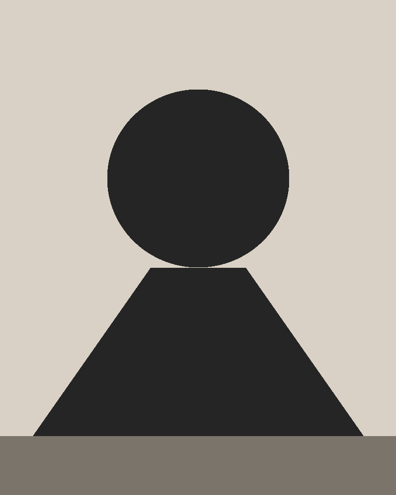

About

I am an Istanbul-born artist based in Berlin, working across painting and photography.
I work exclusively with a painting knife. I enjoy the directness of the process and the physical relationship it creates with the paint. Thick layers, blended colours and shifting reflections of light allow each painting to develop through texture as much as through colour.
Rather than aiming for realism, I try to translate my curiosity into colour, texture, and gesture. My paintings are an attempt to look a little longer, to observe more carefully, and to imagine the world from beyond a human point of view.
Alongside painting, I also enjoy photographing the world in black and white. While my paintings are driven by colour, photography allows me to focus on light, form, and atmosphere from a different perspective.
And yes, I never use brushes. They simply take far too long to clean.
Animal Studies
Light & Shadow Studies
Painting allows me to construct new worlds through colour. Light & Shadow Studies encourages me to slow down and observe the existing one. One is built through imagination, the other through attention.
Experiments in Colour
Contact
For questions, proposals, collaborations, or inquiries about available works and purchases, feel free to get in touch via email.